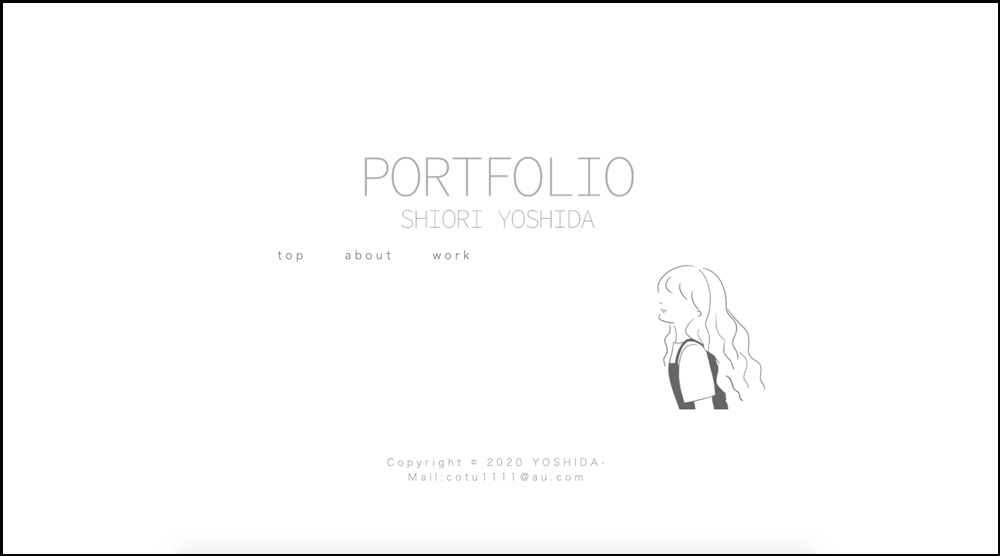

PORTFOLIO

作品について
説明：こちらのポートフォリオサイトです
作品URL：
制作期間：１ヶ月
作業環境： Photoshop・Illustrator・Brackets
使用言語： HTML・CSS
制作意図
学校の授業でポートフォリオ作成の授業がありました。一度作成したものの、気に入ったものが出来なかったのと、実際に就職活動でも使えるものを作ろうと思い、こちらのポートフォリオサイトを作成いたしました。
制作してみて
シンプルなサイトにしたかったのですがその分文字の大きさや太さ、色など細かいバランスに悩みました。
TOPページのnavがなかなか良い位置に来なくて何度もやり直しました。また、ABOUTページのSNSのiconがどうしても列からはみ出して縦に並んでしまい、直すのにとても苦労しました。Googleなどで検索をしたり、本を読んでもわからなかったので最終的には知り合いのプログラマの方に質問したところ簡単な作業で直ることがわかりました。